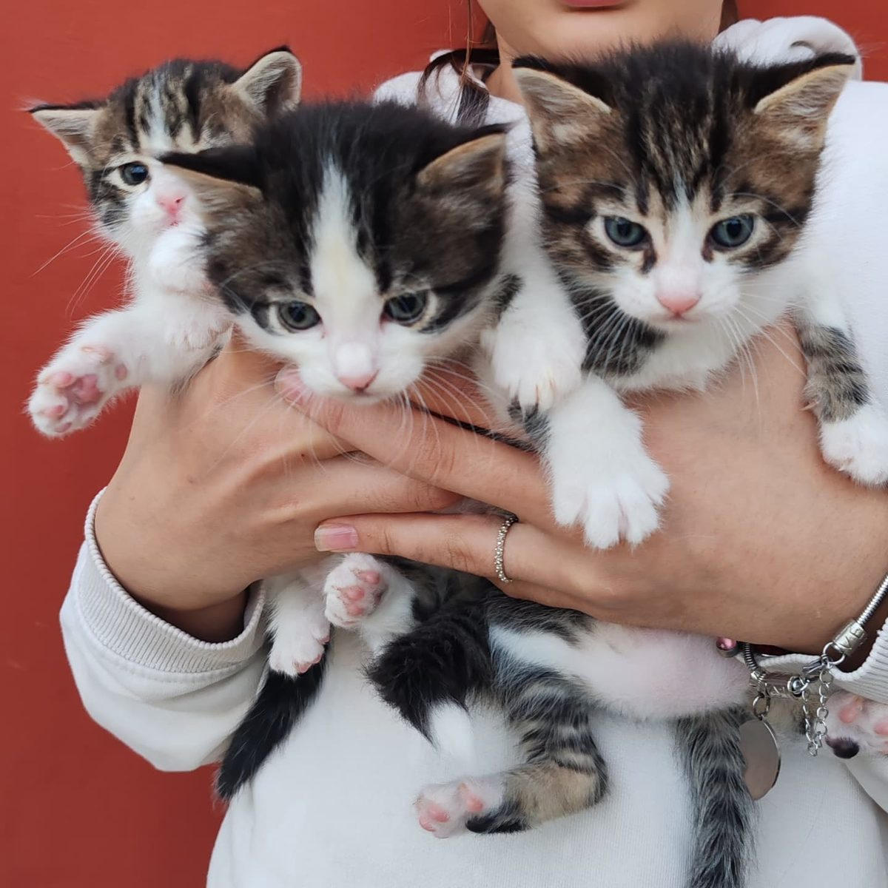
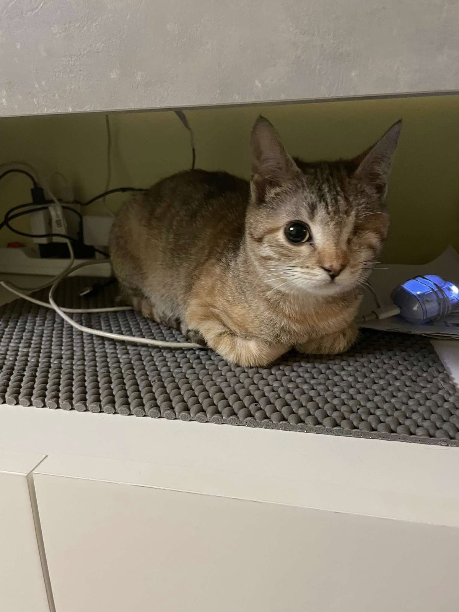
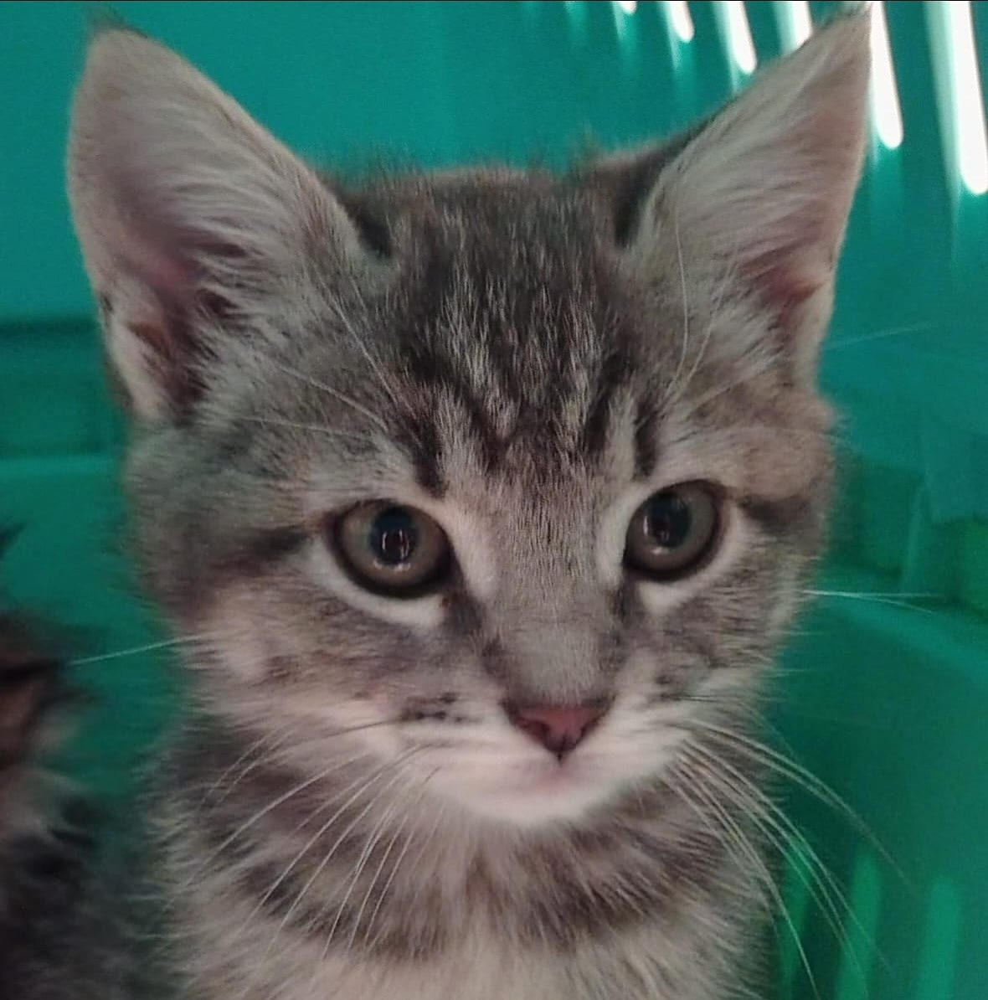
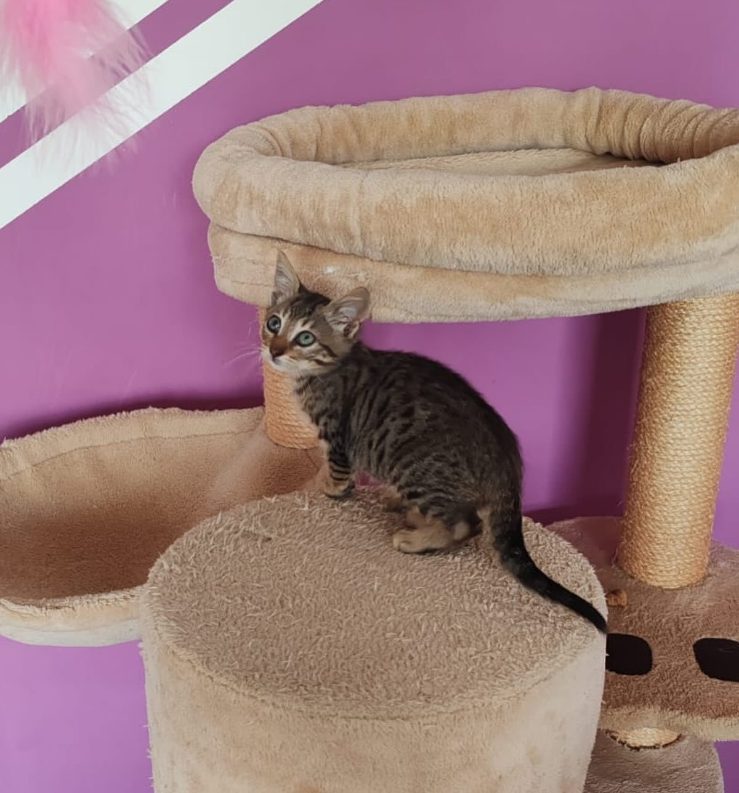
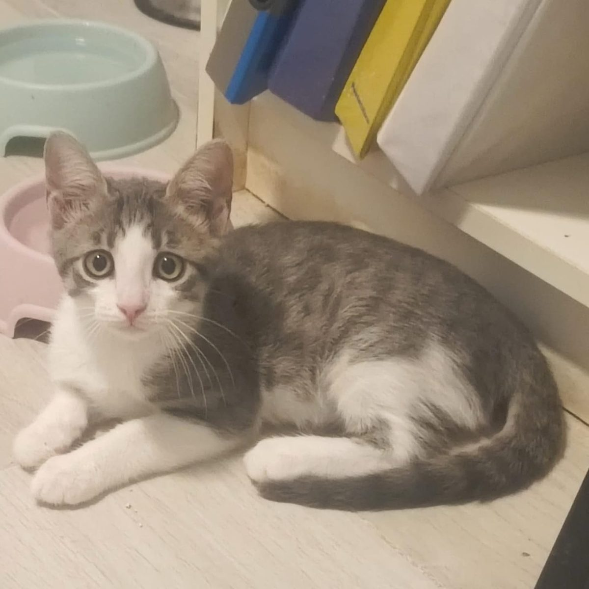
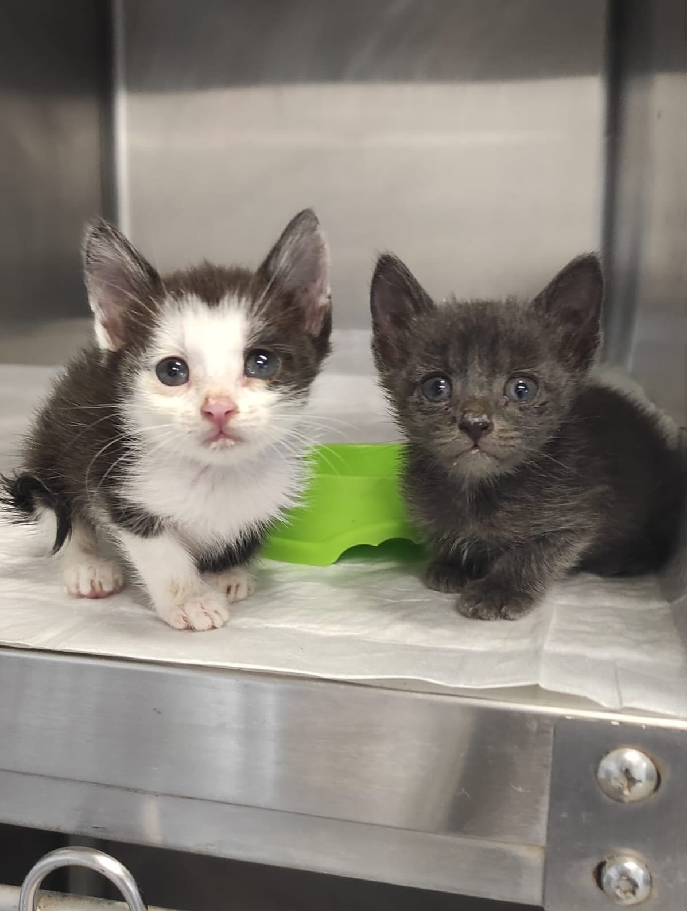
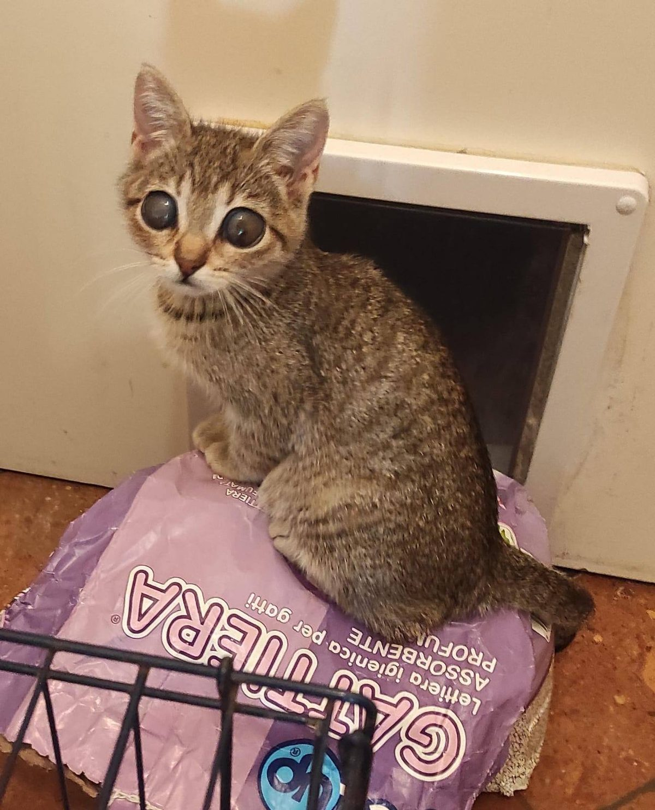
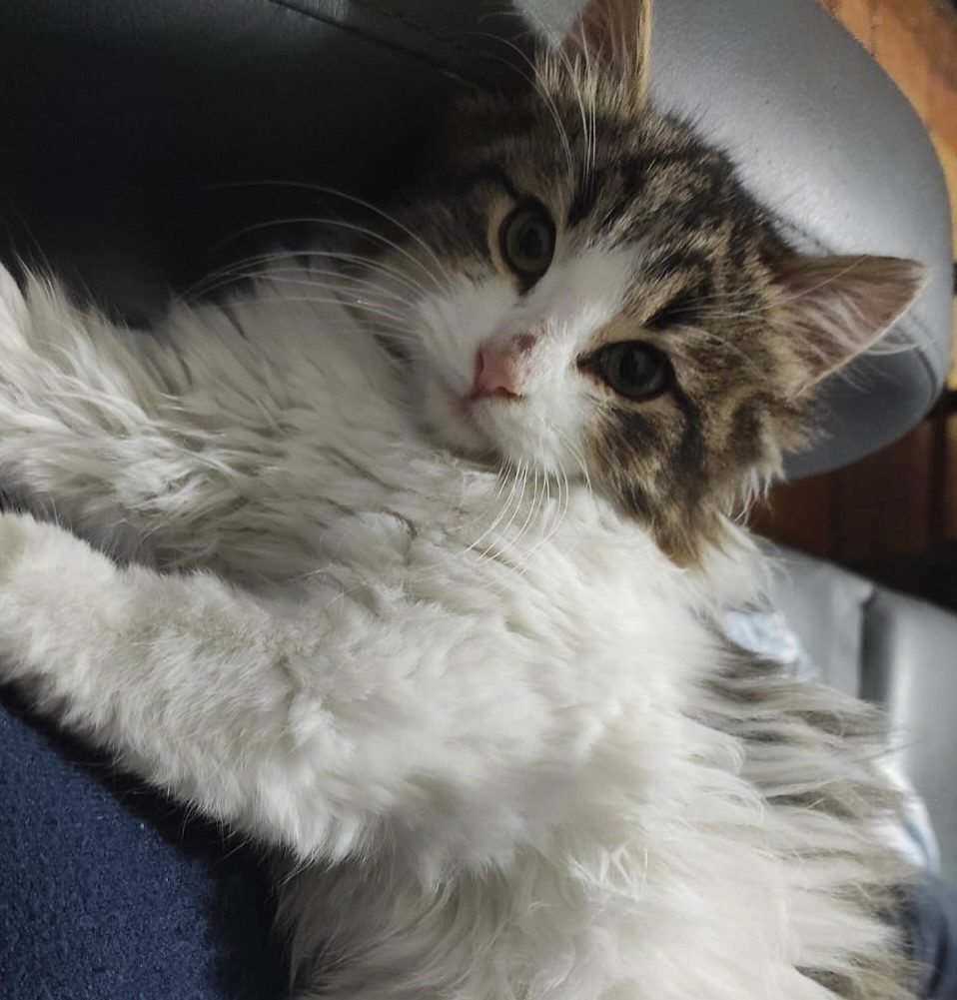

14 punti per accogliere un micio nella tua casa e nel suo modo di vivere il mondo.
Perché convivere con un gatto significa entrare in una logica diversa, tutta da scoprire.

Non sono regole rigide ma esperienza condivisa: quello che abbiamo imparato prendendoci cura di centinaia di gatti, adulti e cuccioli.
I gatti hanno bisogno di tempo. Un micio appena arrivato può nascondersi per giorni. Non forzare il contatto: lascialo esplorare quando si sente sicuro.
Per i primi giorni dedica al gatto una sola stanza tranquilla, con cibo, acqua, lettiera, cuccia e qualche giochino. Aprire subito tutta la casa lo confonde.

Una lettiera va bene per un gatto, due gatti = tre lettiere. Pulisci ogni giorno, cambia la sabbia una volta a settimana. In un punto tranquillo, lontano da cibo.

Evita cambi bruschi. Scegli un mangime di qualità (umido + secco) adatto all'età. Acqua fresca in una ciotola lontana dal cibo: bevono meglio così.

È una scelta di salute, non solo di prevenzione. Riduce tumori, marcatura, fughe e contribuisce a contenere il randagismo.
Anche un gatto indoor ha bisogno di vaccinazioni e controlli periodici. Pianifica una visita all'anno dal veterinario e antiparassitari aggiornati.
Il gatto non ha paura dell'altezza e non sempre atterra in piedi. Proteggi finestre e balconi con reti di sicurezza: è la causa più comune di incidenti gravi.
Graffiare è un bisogno naturale. Se non vuoi che lo faccia sul divano, offrigli almeno un tiragraffi stabile (verticale e orizzontale) e premialo quando lo usa.

Un gatto annoiato diventa ansioso. Dedica almeno 15-20 minuti al giorno al gioco attivo. Mensole, nascondigli, posti alti in cui arrampicarsi: fanno la differenza.

Se hai già un gatto o un cane, l'introduzione va fatta molto lentamente: scambio di odori, poi presentazione a distanza. Forzare l'incontro è il modo migliore per creare rivalità.

Il trasportino non deve essere il "contenitore del terrore" usato solo dal veterinario. Tienilo sempre aperto in casa con una coperta morbida: diventerà un rifugio.
Anche i gatti possono avere il microchip. Se scappa — e può succedere, anche dal gatto più casalingo — è l'unico modo per ritrovarlo se viene recuperato.
Coda alta = felicità. Orecchie indietro = minaccia. Pupille dilatate = paura o eccitazione. Imparare a leggerlo trasforma la convivenza.
A differenza del cane, il gatto non ama le effusioni a sorpresa. Lascia che sia lui a strusciarsi. Quando capirà che rispetti i suoi spazi, sarà lui a cercarti.
